少数の温度・変位観測から
熱変形を推定する
― OpenFOAM＋FrontISTR＋データ同化のオープンソース実装 ―
オープンCAE学会シンポジウム B-16
2026年11月12日（木）
目次
章は → ←、章の中は ↓ ↑ で移動。Esc で全体表示。各項目はクリックで移動できます
はじめに
- 工作機械では熱変位が加工精度を左右する主要因の一つであり、工具と工作物の相対位置を予測したい。
- 対策には熱設計・温度制御・モデル補償があるが、補償には熱変形を正確に予測する必要がある。
- 熱解析や熱流体解析を用いても、温度勾配・熱伝達率・複数の時定数を完全に再現することは難しく、 温度の傾向が合ってもTCP変位が合わない場合がある。
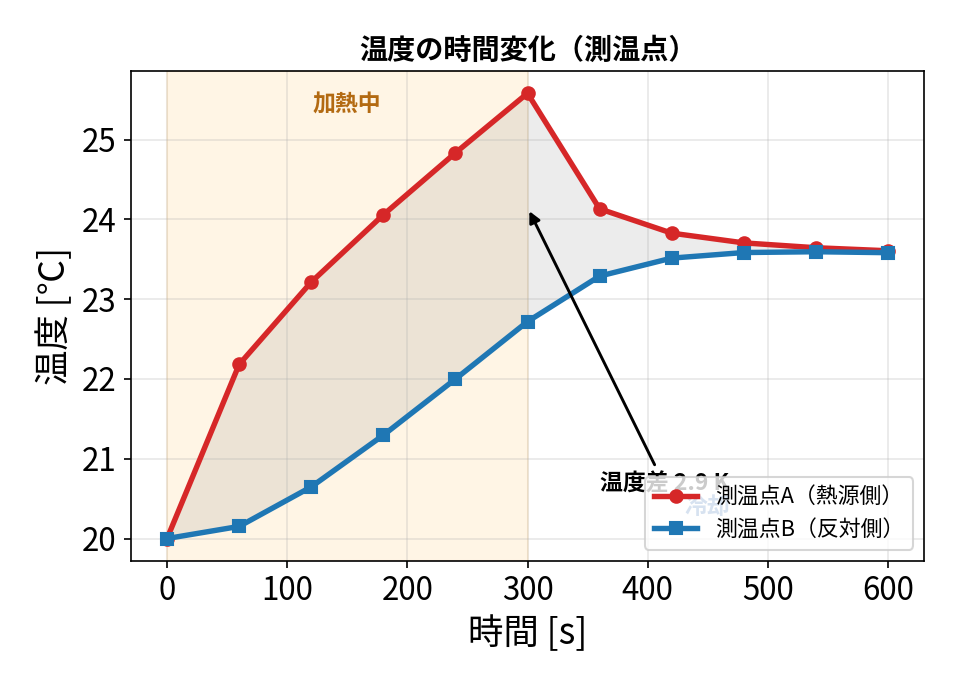
基礎モデルの測温位置における温度履歴（実機実測ではない）

変位の変形具合と変位のグラフ（誇張表示）
目的
- 数値モデルだけでは、初期条件や境界条件の不確かさのために現実を再現しきれない
- そこで限られた温度・変位の観測と数値モデルを統合するデータ同化を用いる
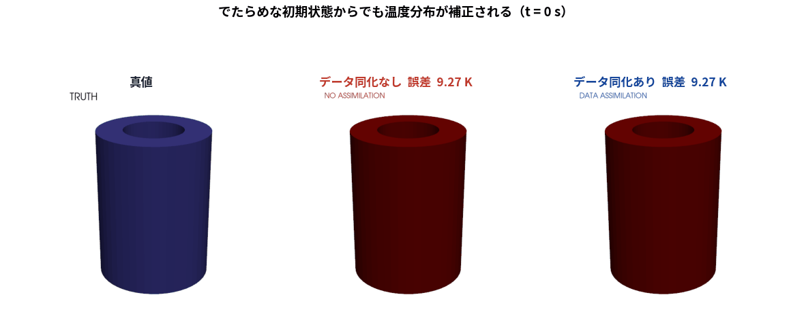
題材：片側ヒータ付き中空円筒（鋼、固体20,696セル）。15 W を 0〜300 s 投入し冷却。 でたらめな初期状態（誤差9.3 K）から、温度2点の観測だけで 同化なしは12.7 Kまで悪化する一方、同化ありは0.24 Kまで補正される
データ同化とは
シミュレーションと実測を、それぞれの確からしさで重み付けして融合し、測っていない量まで推定する枠組み。
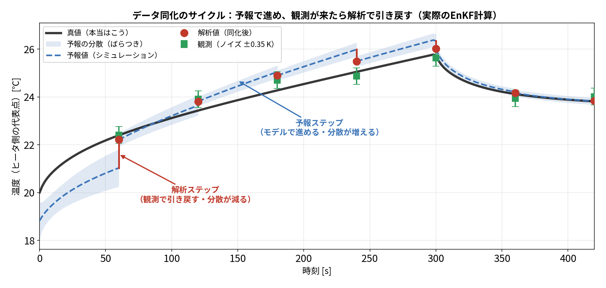
実際のEnKF計算。予報（青破線）はモデルで進むあいだ真値から離れ分散も広がるが、観測（緑）が来るたびに解析（赤）が引き戻し、分散が縮む
データ同化の種類と、今回の選択
| 分類 | 手法 | 考え方 | 特徴 |
|---|---|---|---|
| 逐次 データ同化 観測が来るたび その場で更新 |
OI（最適内挿） | 共分散 \(B\) を固定したまま使う（時間発展させない） | 最も軽い・仕組みが明快 固定共分散の設計に推定性能が依存 |
| カルマンフィルタ | 物理モデルで共分散そのものを逐次計算する \( P^f_k = M\,P^a_{k-1}M^{\mathsf T}+Q \) （\(M\)＝モデルの線形化） |
線形・ガウスなら最適 高次元では \(P\) が巨大で扱えない | |
| EnKF（アンサンブル） | 上の \(P\) を直接持たず、各メンバーを前進させ、アンサンブル平均からの偏差で標本共分散として計算する \( P^f\simeq\dfrac{1}{N-1}\,dZ\,dZ^{\mathsf T},\quad dZ^{(m)}=z^{(m)}-\bar z \) |
高次元でも少数メンバーで済む パラメータも同時推定できる | |
| 粒子フィルタ（PF） | 共分散を使わない。粒子を1つずつ前進させ、観測との合致度で重みを付ける。重みの小さい粒子を捨てて大きい粒子を複製（リサンプリング） \( w^{(m)}\propto p(y\,|\,z^{(m)}),\qquad p(z\,|\,y)\simeq\sum_m w^{(m)}\,\delta(z-z^{(m)}) \) |
分布の形を仮定しない（非ガウス・多峰OK） 高次元で1粒子に重みが集中し縮退 実測：400粒子でも有効粒子数 1.02個 | |
| 変分法 時間窓全体を まとめて最適化 |
3D-Var | ある1時刻で「背景からのズレ」＋「観測とのズレ」を最小にする \(x\) を探す \( J(x)=\tfrac12(x-x^b)^{\mathsf T}B^{-1}(x-x^b)+\tfrac12(y-Hx)^{\mathsf T}R^{-1}(y-Hx) \) |
\(P\) を陽に持たず反復で解ける \(B\) を固定するのでOIと同じ弱点（最小解はOIと一致） |
| 4D-Var | 時間窓全体の観測に合うよう初期値 \(x_0\) 等を時間窓全体で最適化。途中の時刻はモデル \(M\) が決める \( J(x_0)=\tfrac12(x_0-x^b)^{\mathsf T}B^{-1}(x_0-x^b)+\tfrac12\sum_k (y_k-HM_{0\to k}x_0)^{\mathsf T}R^{-1}(\cdot) \) |
窓内の全観測を使うので精度が高い 勾配は随伴・直接感度・自動微分等で計算 OpenFOAM/FrontISTR の随伴を書くことになる |
PFを外した理由：同じ真値・同じ観測で比べると、60メンバーのEnKF 0.076 K に対し400粒子のPFは0.458 K（6倍悪い）。有効粒子数が1.02個まで落ち分布を表現できない＝次元の呪い（状態は約20,000セル）。 変分法を外した理由：大規模な4D-Varでは随伴等の勾配計算が実装負担になる。EnKFなら随伴なしで非線形観測（FEMを通した変位）を扱える
OpenFOAM から FrontISTR へ ― 節点補間と双子実験
CFDはセル中心、FEMは節点に値を持つので位置がずれる。 そこで逆距離加重（IDW）で温度を節点へ写像した。

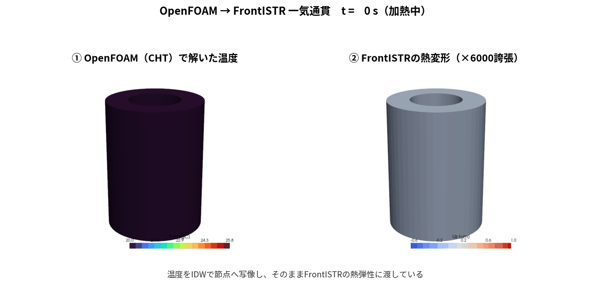
▲ 1枚目＝①なぜ位置がずれるか ②距離の逆数で加重平均する仕組み。2枚目＝左がOpenFOAMのCHT温度、右がFrontISTRの熱変形（×6000誇張）。枠内スクロールで両方見えます
CHTは流体を解くので固体壁に一定の表面熱伝達率を直接指定せずに済む（対流が自然に決まる／輻射も同じ枠組みで扱える ― 本ケースはOFF）。壁面熱流束から表面熱伝達率を診断できる。ただし流体境界・物性・対流モデル等の不確かさは残る。106の同化試験は別途ROM真値を使う
観測データはどう作られ、どう同化に使われるのか
双子実験なので観測も自分で作る。真値にノイズを載せて \(y\) とし、メンバーごとに同じ量を計算して \(Y_f\) とする。 変位は状態に入れず、観測演算子の中で温度から毎回計算するのが要点。

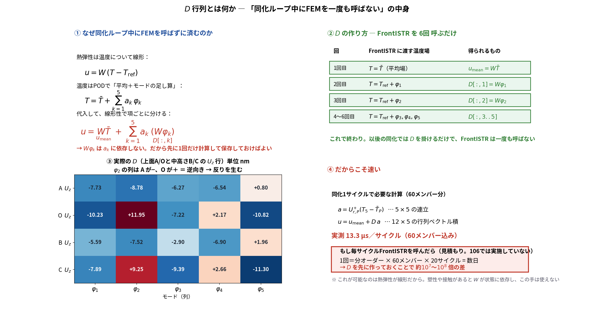
▲ 1枚目＝①観測データの作り方（双子実験）／②予報観測 \(Y_f\) の作り方／③EnKFの更新式。 2枚目＝\(D\) 行列とは何か（なぜFEMを呼ばずに済むか・6回の作り方・実際の数値・速度）。枠内スクロールで両方見えます
\(D\) は事前にFrontISTRを6回（平均場＋5モード）呼んで作った \(2\times5\) の定数行列。同化ループ中にFEMは一度も呼ばない。 更新式は温度だけのときと同一で、\(C_{zy}\) に \(\mathrm{Cov}(T_i,u_j)\) の列が入ることだけが違う
課題① OIでは発熱量が当たらない
状態を拡大して \( x=(T_1,\dots,T_5,\;Q,\;h)^{\mathsf T} \) とし、共分散 \(B\) を固定したOIを実ソルバ（20,696セル）で実行した。
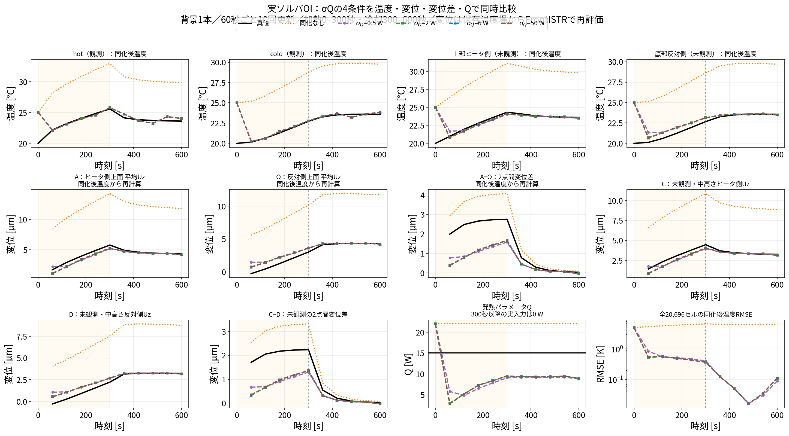
▲ 枠内スクロールで全12枚（温度4点・変位4点・\(Q\)・RMSE）。温度は真値に追従（最終RMSE 0.090〜0.113 K）するが \(Q\) は 8.8〜9.0 W で頭打ち（真値15 W）
実際の \(s\) は時間とともに変わるのに固定のまま。\(\sigma_Q\) を4条件振っても \(Q\) は9 W付近で頭打ち
課題② EnKFは当たるが計算コストが大きい
EnKFは共分散を行列で持たず、少しずつ条件の違うメンバー（分身）を並行して前進させ、そのばらつきから共分散を作る。

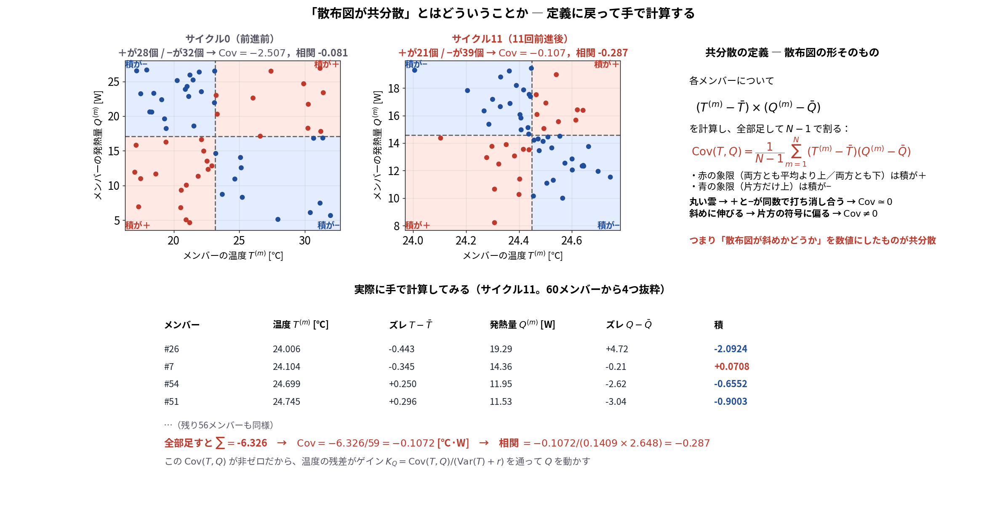
▲ 1枚目 A：60本のメンバーを前進させる／B：初期は温度と \(Q\) が無相関（丸い雲）／C：前進させるだけで斜めに伸びる＝連動が生まれる。 2枚目＝「散布図が共分散」とはどういうことか。4象限で積の符号を塗り分け、実際の60メンバーから手計算で \(\mathrm{Cov}=-0.107\)、相関 \(-0.287\) を出している
ただし計算量 ≒（メンバー数）×（サイクル数）×（予報1回のコスト）。実ソルバは1回で分オーダーなので、50〜200メンバー × 10サイクル＝数時間〜数日
パラメータの同定 ― 発熱量 \(Q\) は当たり、放熱 \(h\) は当たらない
手順は状態拡大だけ。推定したいパラメータを状態ベクトルに入れる：\( z=(T_1,\dots,T_5,\;Q,\;h)^{\mathsf T} \)。 各メンバーに違う \(Q,h\) を持たせて前進させると、温度と \(Q\) の相関が自然に育ち、温度しか測らなくてもゲインの \(Q\) 行が非ゼロになる。
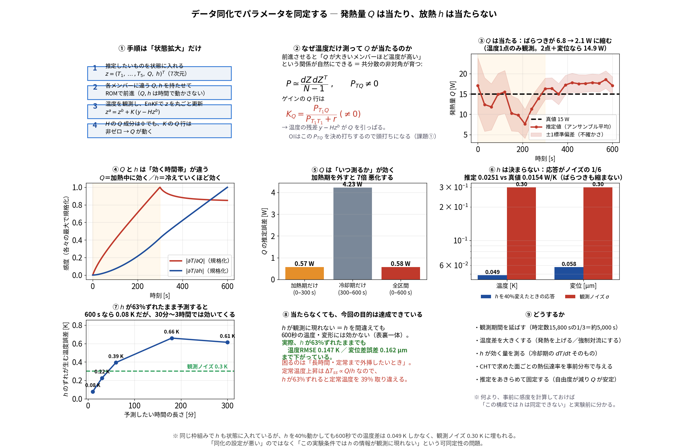
▲ ①手順 ②なぜ温度だけで \(Q\) が動くのか ③\(Q\) の収束 ④\(Q\)と\(h\)の効く時間帯 ⑤いつ測るか ⑥\(h\) が決まらない理由。枠内スクロールで下段まで見えます
\(h\) が観測に現れない＝\(h\) を間違えても600秒の結果に効かない（表裏一体）。困るのは長時間の外挿：1時間で0.39 K、定常では \(\Delta T_{ss}\propto Q/h\) なので39%取り違える。 対処は観測を延ばす／温度差を上げる／\(dT/dt\) を測る／CHTの値を事前分布にする／固定する。事前に感度を計算すれば「同定できない」と実験前に分かるのが要点。詳細は blog_003 §4-0
課題の整理と、本研究での解決
ここまでで分かった課題
(2) どこの温度を観測するかの基準がない
本研究で行ったこと
→ 0→600 s が 31 ms（分オーダー → ミリ秒）
→ 同じ変位2点でも 2.43 K と 0.86 K
低次元モデル化 ― POD
温度場スナップショット（20,696セル × 121時刻）を特異値分解し、場の「型」を抽出した。 \( X=\sigma_1 u_1 v_1^{\mathsf T}+\sigma_2 u_2 v_2^{\mathsf T}+\cdots \)

モード1（91.8 %）＝全体が一様に昇温する型／モード2（8.08 %）＝ヒータ側と反対側の温度差／モード3（0.11 %）＝ほぼ効かない
実装は numpy で3行。物理の知識は一切与えていない
代表点の選択 ― Q-DEIM
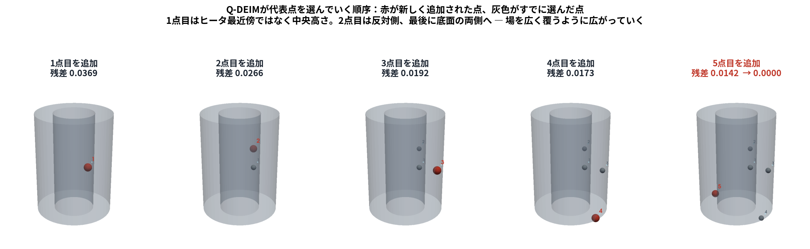

▲ 上＝選ぶ順序（各パネルの「残差」は復元前のモード空間の無次元量。温度[K]ではない）／ 下＝温度[K]のRMSE。枠内をスクロールすると両方見えます
scipy.linalg.qr(..., pivoting=True) と完全に一致 ＝ 枢軸付きQR分解そのもの復元してからの温度RMSE（全20,696セル）：1点 0.527 K → 2点 0.066 K → 5点 0.00081 K（650分の1）。 同じ5点でもランダムだと中央値 0.00220 K・最悪 1.396 K（1,724倍） ― 価値は「大外れを確実に避ける」こと
なぜその5点なのか ― PODと測定点の関係
PODが「全場は5個の数 \(a\) で決まる」と言った瞬間、測定点選びは \(5\times5\) の連立方程式を解きやすくする問題に変わる。 ①②＝式の流れ／③④＝実際の \(U_{r,P}\)（Q-DEIMは条件数3.15、ランダム最悪は上3行がそっくりで151,718）／⑤＝条件数と復元誤差は対数どうしの相関 +0.917
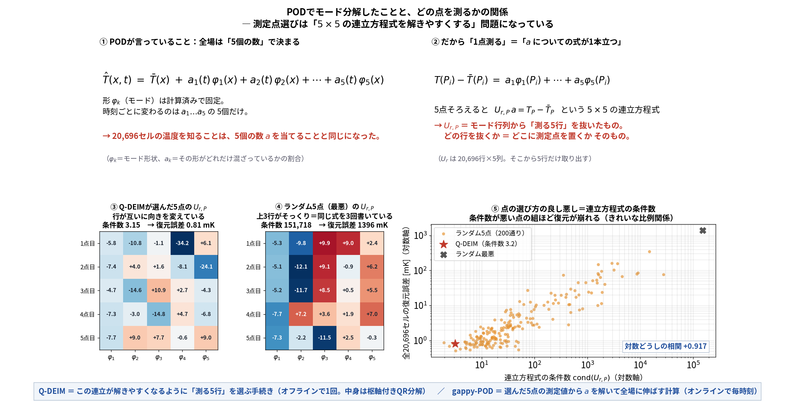
▲ 枠内をスクロールすると図の下半分（実際の行列と散布図）が見えます
「ランダム5点」とは：20,696セルから一様に5セルを選び直し（重複なし）、同じPODモード・同じ復元式で全場を復元する対照実験を200回。変えたのは「どの5行を抜くか」だけ
検証 ― 5点で本当に全体が合うのか（時刻歴）
残差の棒グラフだけでは分からないので、選点にも校正にも使っていない検証点を上部・中央・下部から取り、温度の時刻歴で真値と重ねた。

左端＝測定する5点（青 P0〜P4）と検証点（赤 V1〜V3）の位置。V1＝上部・V2＝中央・V3＝下部で、いずれも5点から52〜73 mm離れている。 中3枚は黒＝OpenFOAM真値、赤破線＝Q-DEIM 5点から復元、灰点線＝ランダム5点（200通り中の最悪）から復元。 立ち上がり方も冷え方も違う3点で、いずれも赤が黒に重なる。右端＝全20,696セルRMSEの時刻歴
ランダム5点の最悪例は同じ枚数のモードを使っても 0.295 K まで崩れる ＝ 点の選び方が効いている
ROMの構築と校正
選んだ5点上で集中定数モデルを組み、係数 \(C_i, K_{ij}, h\) をOpenFOAM結果に合うよう最小二乗で校正した。 \( C_i\dfrac{dT_i}{dt}=\sum_j K_{ij}(T_j-T_i)+q_i(t)-h(T_i-T_{\mathrm{air}}) \)

5ノードと結合コンダクタンス \(K_{ij}\)（P0-P2が最強）
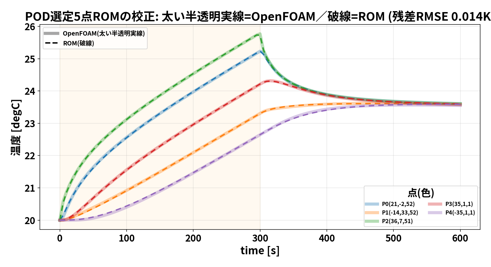
校正したROMはCHTの温度履歴をほぼ再現
分身200個 × 10サイクルでも数十秒 ＝ EnKFが現実的な時間で回るようになった
結果① 温度が精度よく再現できる
でたらめな初期状態から出発し、少数の温度観測だけでROM＋EnKFを回した。
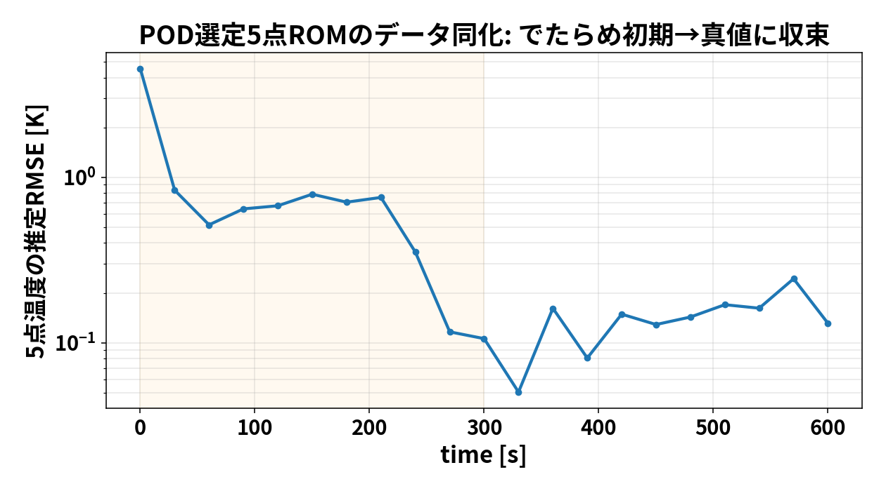
同化を重ねるごとに全点温度RMSEが下がる。観測ノイズ（0.3 K）を下回る水準まで到達する
結果② 5点から温度分布を復元する
gappy-POD により、代表5点の測定値から全20,696セルを再構成する。式の中身を順に追う。
手順① 測って、平均からのズレにする \( \;\delta_P = T_P-\bar u_P \)（5×1）。 PODは「平均場からの変動」を分解したので、比べる相手も平均を引いた量にそろえる。
手順② 5本の式を連立して \(a\) を出す 測った各点 \(P_i\) について、PODの定義からこう書ける：
\(U_{r,P}\)＝\(U_r\) から「測った5行」だけを抜いた 5×5 行列。ここだけが逆行列を取る対象で、解くのは5元連立1回。
手順③ その \(a\) を全セルに使い回す \( \hat T=\bar u+U_r\,a \)（20,696×5 と 5×1 の積）。セル \(c\) 1個で書くと
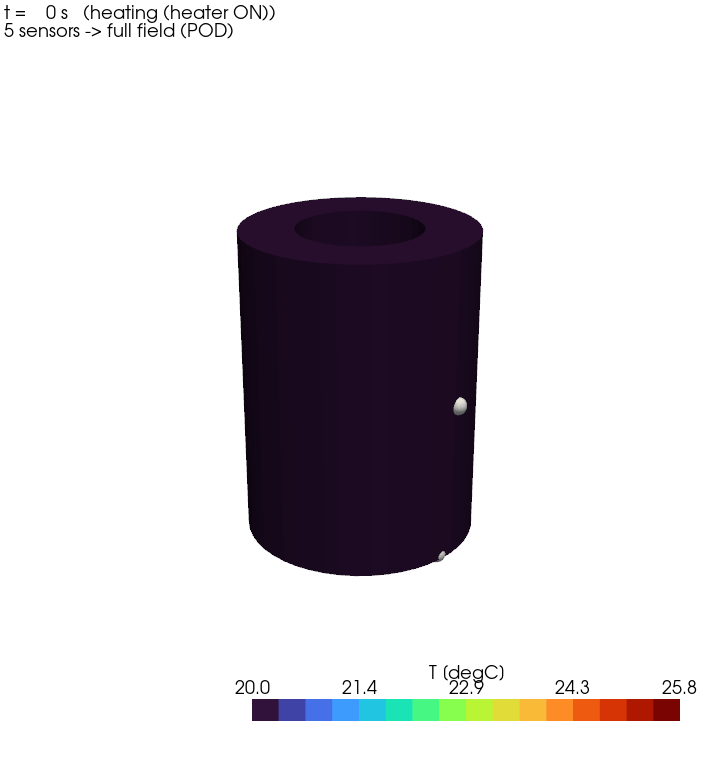
ピンク色の球（5点）だけを測り、
そこから全場を復元したアニメーション
前半60枚でPODと5点を作り後半61枚で検証しても0.0023 K。観測ノイズ0.3 Kより2桁小さい／Q-DEIMが「連立が解ける5点」を選ぶので \(U_{r,P}\) が特異にならない
結果③ 測れない場所の熱変形を、測れる場所から当てる
実機では加工中の工具先端に変位計を置けない。そこで構図をそのまま実験にした。 評価点＝上面A/Oの反り（z=100.5 mm・工具先端側に相当、同化に一切使わない）／ 観測点＝温度2点＋変位B/C（z=75.4 mm・25 mm下）。

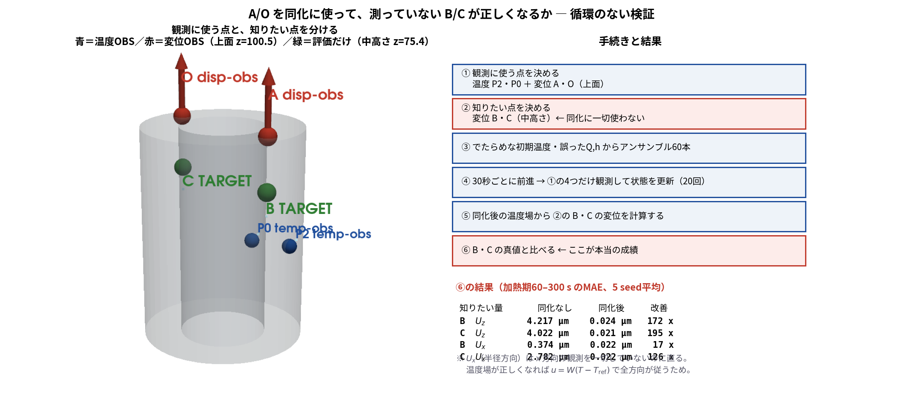
▲ 1枚目＝\(U_z(A)\)／\(U_z(O)\)／反りの時刻歴。赤破線＝B/Cだけ測った構成が青点線（A/Oを測った参考値）とほぼ重なる。2枚目＝観測点と評価点の位置
温度2点だけだと 0.697 µm で反りは当たらない（個別の \(U_z(A)\) は0.160 µmまで合うのに）＝この条件では変位観測の追加が差の精度を改善した。同化なしの0.238 µmは見かけ（個別には5.6 µm外れ、A・Oが同方向に外れて相殺しているだけ）
なぜ反りが要るか：反り2.735 µm＝傾き角 \(\theta=0.0027^\circ\)。工具先端の位置ずれは \(\delta\simeq\theta L\) で工具長に比例し、100 mmで4.8 µm・200 mmで9.5 µm（反りからの換算値。工具先端の解析はしていない）。 傾き角を知らないとこの工具長依存を計算できない［Yang et al. 2015］
温度センサを1本も使わず、変位計だけで温度場を直せるか
実機では内部に熱電対を入れられないことがある。変位計だけで足りるならセンサ構成の選択肢が広がるので確かめた。

▲ ③④＝変位だけ（温度センサ0本）／②＝温度だけ／⑥＝両方。左＝全5点の温度RMSE、中＝発熱量 \(Q\)、右＝反りの誤差
変位計は「5点温度の重み付き和」を測っているので、1本で5点すべてに触れる（温度計は1点だけ）。未知が7個なので広く触れるほうが絞り込みが速い。 置く場所も上面0.207 Kと中高さ0.244 Kでほぼ差がない。ただし温度2点＋変位2点の0.127 Kが最良＝局所と大域は補完関係
結果③-2 どの方向・どの場所でも当たるのか
前ページは上面の反りだった。ここでは観測点と評価点を入れ替え、観測＝温度2点＋上面A/O の \(U_z\) だけ、評価点＝中高さ B/C（z=75.4 mm）として、 観測していない \(U_x\)（半径方向）まで直るかを見る。

▲ 1枚目＝手続きと結果。2枚目＝時刻歴（行＝成分 \(U_x,U_y,U_z\)／列＝点。A・O＝観測点、B・C＝評価点（未観測点））。枠内スクロールで両方見えます
同化が直しているのは変位ではなく温度場（4.585→0.160 K）。\(u=W(T-T_\mathrm{ref})\) の \(W\) は3成分を含むので、温度が合えば同じ線形写像で表現できる各方向の変位も改善し得る。温度RMSEだけで全方向の精度は保証しない。 \(U_y\) だけ変わらないのは4点とも \(y=0\) の対称面上で元から誤差が振幅の3%しかなかったため。5 seed平均・60〜300 sのMAE
熱感度 \(W\) はどこから来るのか ― 熱弾性からの導出
熱弾性は温度について線形なので、温度から変位への写像が行列1つにまとまる。それが熱感度 \(W\)。 ①\(K_su=f_\mathrm{th}\) ②\(f_\mathrm{th}=H_T(T-T_\mathrm{ref})\) ③\(u=K_s^{-1}H_T(T-T_\mathrm{ref})\) ④行＝どこがよく動くか（変位センサ）／列＝どの温度が効くか（温度センサ） ⑤全 \(W\) を作らずPODモード方向だけFrontISTRに通す（6回）
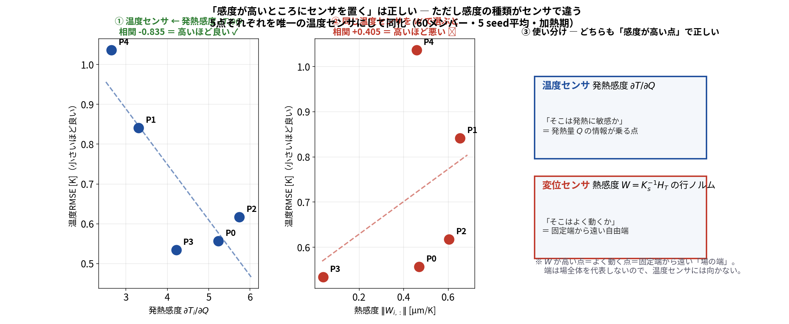
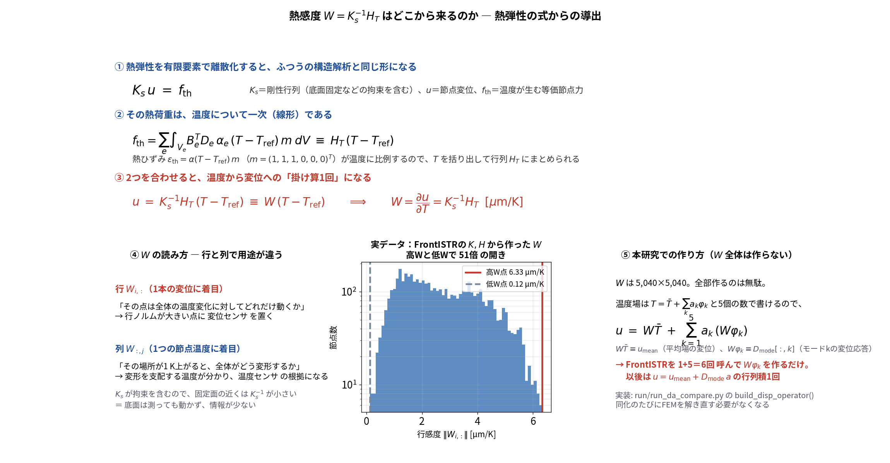


▲ 1枚目＝2つの感度の使い分け（温度センサは \(\partial T/\partial Q\)、変位センサは \(W\)）。続いて導出、④⑤（\(W\)の読み方・実データ・実装）、 熱感度 \(W\) の空間分布が見えます。分布は固定した底面（\(U_z=0\)）を基準にした絶対変位で、 上へ行くほど膨張が積み上がって大きく動く。実際に測る \(U_z(A)-U_z(O)\) は2点の相対変位で、一様な伸びが引き算で消えて「反り」だけが残る
\(K_s\) が底面固定を含むので固定面の近くは \(K_s^{-1}\) が小さい＝底面は測っても動かない（高Wと低Wで51倍の開き）。 一方、温度センサの基準は発熱感度 \(\partial T/\partial Q\)。\(W\) を温度センサに流用すると逆効果になる（温度RMSEとの相関：\(\partial T/\partial Q\) −0.835 に対し \(W\) は +0.405）
熱感度による観測点の選択
条件をそろえた対照実験：手法はOI（共分散 \(B\) を固定）、温度はP2（36.5, 6.9, 50.8）mm の1点に固定し、 変えたのは変位2点の置き場所だけ。高W＝上面 z=100.5 mm（6.33 / 4.45 µm/K）、低W＝底面近く z=5 mm（0.12 / 0.13 µm/K）。

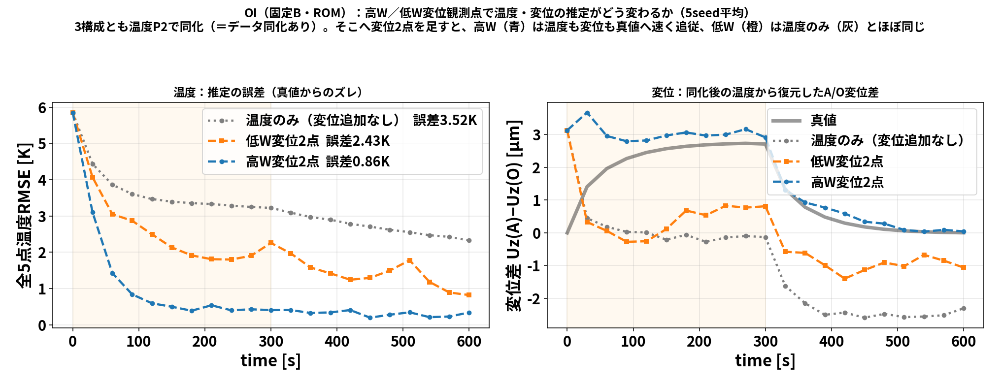
▲ 上＝どこを測っているか（青 P2＝温度、赤＝高W変位2点、橙＝低W変位2点）／下＝結果。枠内スクロールで両方見えます
青（高W）がまだ真値からずれるのは①OI＝\(B\) 固定（課題①）②温度1点だけ ③注目量 \(U_z(A)-U_z(O)\) そのものは測っていないから。 EnKF＋温度2点＋A/O変位にすると結果③の赤線のように一致する（0.16 µm）。この図の目的は絶対精度ではなく置き場所の効きの比較
結果④ 観測を増やすほど精度が上がる
温度1点 → 温度2点 → ＋変位2点 と観測を増やし、ROM＋EnKF（5 seed平均）で比較した。

どこで観測しているか（温度：赤・青／変位：橙・灰）
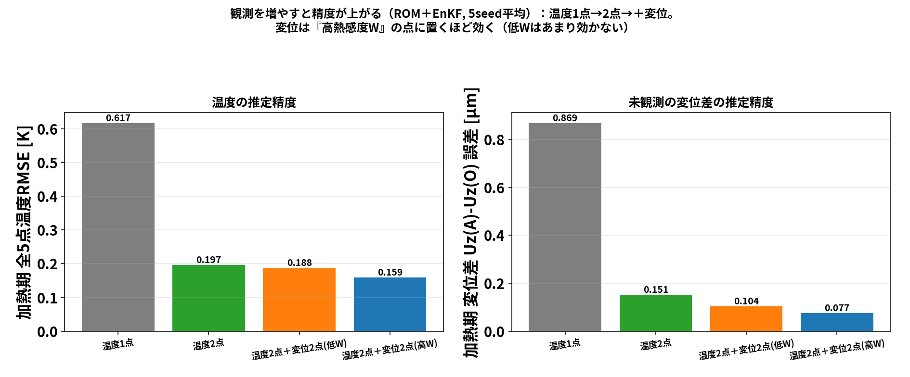
温度RMSE 0.617 → 0.197 → 0.159 K／未観測の変位差誤差 0.869 → 0.151 → 0.077 µm
今回の高W候補は低W候補より改善した（低W 0.104 µm → 高W 0.077 µm）
観測の価値を1本の式で測る
「どこに何を置くか」は、その観測で知りたい量の不確かさが何%消えるかで測れる。 \( \Delta(X,y)=\dfrac{\mathrm{Cov}(X,y)^2}{\mathrm{Var}(y)+r} \) ＝ カルマンフィルタで分散が減る量そのもの（\(X\)＝推定したい量、\(y\)＝観測、\(r\)＝センサのノイズ分散）。
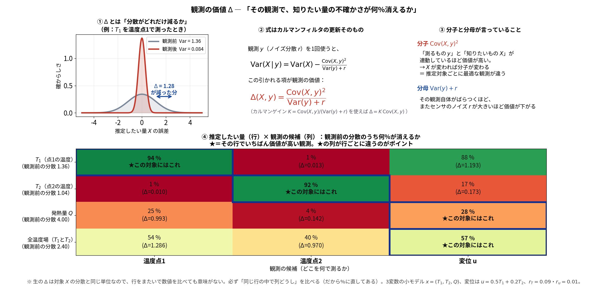
▲ ①分散が減る絵 ②式の出どころ ③分子・分母の意味 ④対象×観測の表。枠内スクロールで④まで見えます
\(T_1\)を知りたいなら温度点1（94%減）、\(T_2\)なら温度点2（92%減）、発熱量\(Q\)と全温度場なら変位（28%／57%減）。 ここは説明用3変数モデル。Δは単回の分散減少であり逐次同化の最終精度を保証しない（追加試験で順位不一致）。Q-DEIMとも別の基準
まとめ
| 段階 | やったこと | 結果 |
|---|---|---|
| 連携 | OpenFOAM(CHT) → 節点補間 → FrontISTR(熱弾性) | 温度・変形・面ごとの熱伝達率を算出し、双子実験の真値とした |
| 同化 | OI／EnKFで温度・変位を同化 | 実ソルバOI例：\(Q\)=8.9 W／104 EnKFの別設定：14.926 W（真値15 W。公平な同条件比較ではない） |
| 低次元化 | PODで場を2モードに圧縮（99.9 %） | 0→600 s が31 ms（実ソルバは分オーダー） |
| 代表点 | Q-DEIMで5点を自動選定しROMを校正 | 校正残差 0.0142 K、比較したランダム配置の最悪1.4 Kより良い復元（大域保証ではない） |
| 観測設計 | 温度センサは発熱感度 \(\partial T/\partial Q\)、変位センサは熱感度 \(W\) で選ぶ | 同化なし 4.59 K → 0.16 K（約29倍）／同じ変位2点でも置き場所で 2.43→0.86 K |
| 観測外評価 | 知りたい場所を測らずに当てる（観測＝中高さ、評価＝上面） | 反りの誤差 0.081 µm（振幅の3.0%）。直接測った場合(0.077)とほぼ同じ |
| センサ構成 | 温度センサ0本（変位計だけ）でも成立するか | 温度RMSE 0.207 K ― 温度2点だけ(0.453 K)の2.2倍良い |
さらに「どこを・何で・いつ測るか」を定量的に設計でき、測れない場所の熱変形を測れる場所から推定できることを示した
本研究の強みと、優位性を示す次の検証
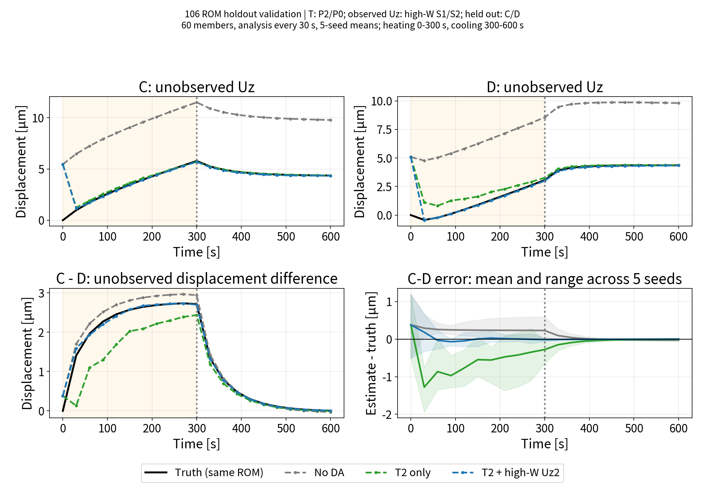
106同一ROM双子実験／60メンバー／30秒更新／5seed／σT=0.30 K、σu=0.30 µm。加熱30〜300秒、C/Dは更新に使わない。
現在の証拠
温度P2/P0のみ：未観測C−D RMSE 0.792 µm
＋高W変位S1/S2：0.158 µm（約80%低下）
強み：公開実装と条件を伴う、観測外の相対変位の評価。同じROM真値での追加観測効果であり、実機精度や固定予算での最適配置は未証明。
優位性を裏付ける3項目（いずれも未実施・今後の検証）
① 未学習条件のCHT＋FrontISTRを真値にする
② 同じセンサ数で感度・情報・基準配置を比較
③ Q/hとholdout変位の誤差・ばらつきを併記
原典・条件・検証計画 ／ goal-oriented sensor placement: 2025/2026先行研究
限界と今後／公開情報
正直な限界
- 放熱 \(h_{\rm rom}\) [W/K]は600秒では情報が弱い。5,000秒のROM外挿試験では3seed平均誤差1.30%に改善。ただしアンサンブル幅は真値の約18%、独立CAE検証は未実施
- Q-DEIM点は「復元に良い点」であり、推定に最適な保証はない
- 発熱量変更の復元試験では誤差が小さい。伝導は \(Q\) に線形で、\(Q\) はモード係数 \(a\) のスケールに吸収される （3〜75 Wで復元誤差 0.0004〜0.0045 K、常にノイズの2桁下）。ただし自然対流の \(h\) は \(\Delta T\) に依存するので厳密には非線形
- 発熱の位置・分布や形状が変わると作り直し。モードは20,696セルに紐づくベクトルなので別メッシュでは意味を持たない （ただし CHT→POD→Q-DEIM→ROM校正 の手順はそのまま再利用でき、自動化済み）
- 観測量は \(z\) 変位2点のみ。半径方向 \(U_x\) も同程度動くが、観測せずとも直ることを確認済み（結果③-2）。ただし \(y\neq0\) の点や \(U_y\) の可観測性は未検証
- 傾きの補正可能性は機械構成に依存。工具の姿勢は3軸機では変えられないが、工具先端の位置ずれ \(\delta\simeq\theta L\) は並進なのでNCで補正できる［Yang 2015］。一方、旋盤では傾き0.0099°で並進とみなせるとの報告もある［Zhao 2025］
- 比較は候補内のものであり、大域最適の証明ではない
今後
- 未学習Q・加熱履歴のOpenFOAM＋FrontISTR真値で独立検証。学習ROMと同じ真値だけで性能を結論しない
- 同じセンサ数・ノイズ・seed群で配置を比較し、温度・Q/h・未観測変位差を同時評価
- hの初期分布・観測時間・膨張を分離検証。前処理と同化1周期の全実行時間を計時
公開情報
| 内容 | 場所 |
|---|---|
| リポジトリ | github.com/kamakiri1225/ thermal-da-demo |
| 解説記事（全5回） | kamakiri1225.github.io/ thermal-da-demo/ |
| blog_001 | CHT → 熱膨張、熱伝達率の分布 |
| blog_002 | OI ― 数式と3点モデルの手計算 |
| blog_003 | EnKF ― 分身の散らばりで共分散を作る |
| blog_004 | POD で代表点をデータから選ぶ ROM |
| blog_005 | 推定対象で最適センサは変わる |
ご清聴ありがとうございました